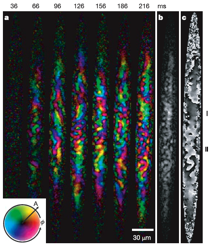

antiferromagnetic
condensate
Üferromagnetic spinor condensate,
Rb-87, F=1
Üantiferromagnetic spinor condensate,
Na-23, F=1
ÜRecent prediction of spin-domain
formation and phase separation will
be tested.

Spontaneous
symmetry breaking in a quenched ferromagnetic
spinor Bose-Einstein condensate: L.E.
Sadler et al., Nature 443 (2006)